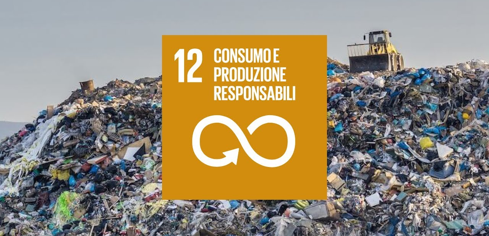

OBIETTIVO 12 ONU

Per consumo e produzione sostenibili si intende l’avanzamento dell’efficienza delle risorse e dell’energia, di infrastrutture sostenibili, così come la garanzia dell’accesso ai servizi di base, a lavori dignitosi e rispettosi dell’ambiente e a una migliore qualità di vita per tutti.
Elenco obiettivi Art.12
Dimezzare la quantità di spreco di cibo a livello globale, da parte sia di individui sia di aziende.
Garantire il rispetto degli accordi internazionali per il trattamento delle sostanze chimiche dannose, prendendosi cura dell’aria, dell’acqua e del suolo.
Ridurre la produzione di rifiuti attraverso le tre R: Ridurre, Riutilizzare e Riciclare.
Assicurarsi che le pratiche attuate dalle grandi aziende siano responsabili, trasparenti ed ecologicamente corrette.
Mantenere il pubblico informato e istruito, nonché fornire gli strumenti per vivere in armonia con la natura al fine di adottare degli stili di vita sostenibili.